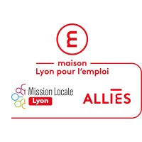
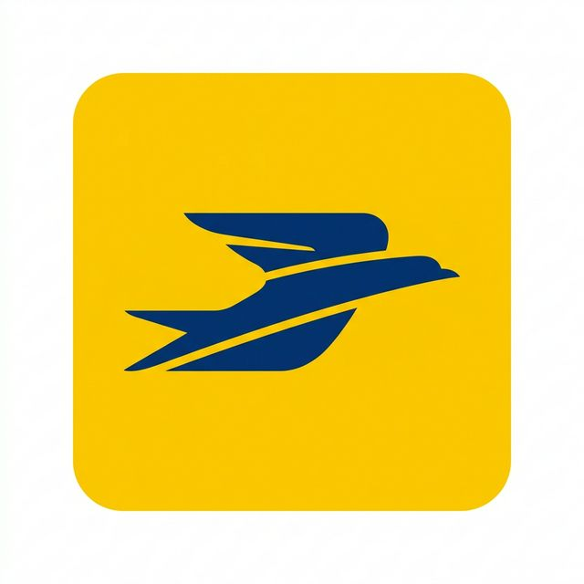

Timeline_Expériences
09.2025 — Aujourd'hui

Maison Lyon pour l'EmploiAlternant en Informatique
Maison Lyon pour l'Emploi · Contrat en alternance · Hybride
Intégration en tant qu'informaticien au sein de l'équipe. Maintenance Windows, réparation hardware, support utilisateurs et contribution aux projets numériques de la structure.
08.2025 — 01.2026

La Poste GroupeAgent de Tri
La Poste Groupe · CDD · Sur site · Lyon
Tri et acheminement du courrier au sein des centres de distribution. Gestion du stress en environnement cadencé, rigueur et autonomie au quotidien.
25.11.2023 - En cours
Auto-Formation (Développement)
Villeurbanne
Apprentissage en autodidacte du HTML/CSS/JS, Python et concepts cyber.
18.09.2023 - 19.07.2024
Bibliothécaire
Bibliothèque de l'Université du Bénin, Cotonou
Gestion documentaire et accompagnement des utilisateurs du pôle informatique.